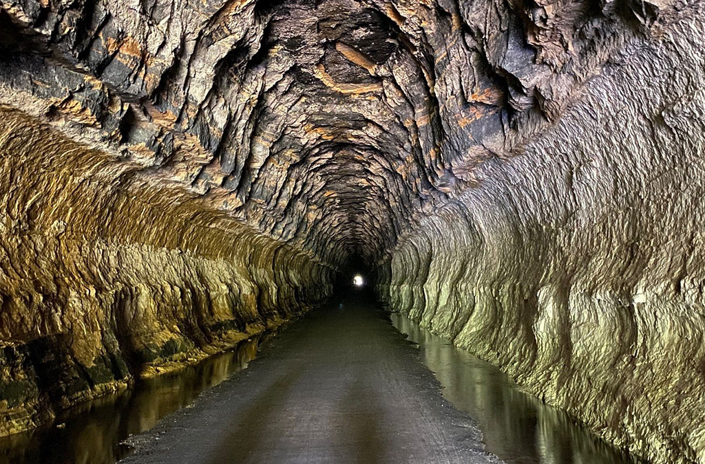

The Quietest Little Town in Juneau County Wisconsin
While I'm here to speak on my 'neighborhood' you must understand, NOTHING goes on in my neighborhood except for gossp, as is the case of most of the small towns in the midwest. Therefore, for this page, the entirety of Elroy is my 'neighboorhood.'
So, you might be thinking to yourself, what can I do in this sleepy little town? Well, there are a few things. In summer and fall, the three bike trails that start in our city are open for visiters to walk or bike along. While on those trails you will experience limestone tunnels that go through the bluffs that go through our area, which is unique to all of the midwest.

Other activities include:
Snowmobiling durring the winter
Enjoying the three bars in town (unlike most small towns, we have the same amount of bars as churches. Usually the bars outnumber the churches.)
Go hunting or fishing nearby, IF invited by a local (always go with a local. You'll have a better time that way.)
Learn the lingo! Never heard of "yeah sure youbetcha," "shnockered," "tell your folks I says hi," "watch out for deer"? Mix up the "yeah no" and the "no yeah" or, heven forbid, the "no yeah no" and "yeah no yeah"? Well, you'll soon learn all of that and more.